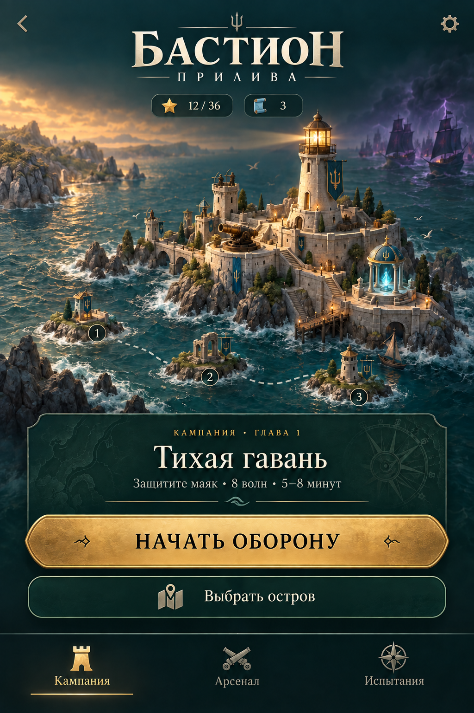
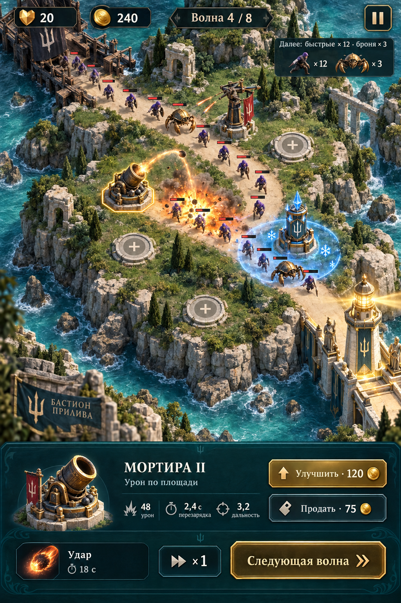
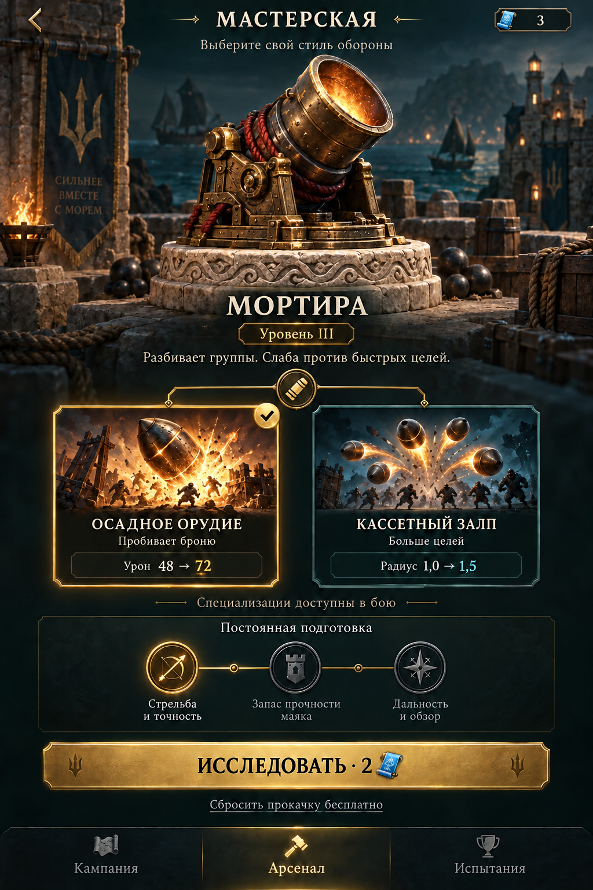
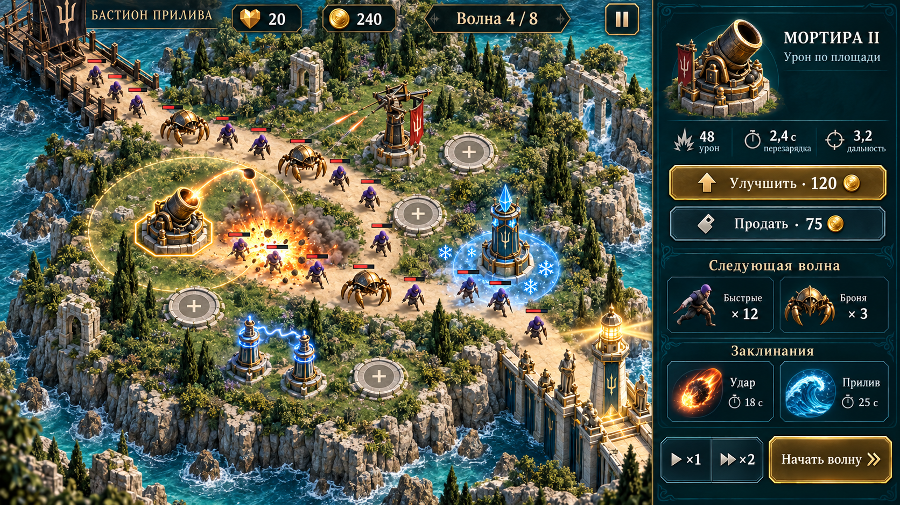

Прилив замедляет группу, мортира накрывает её, молния усиливает атаку по мокрым врагам.
МОРСКАЯ КРЕПОСТЬ · TOWER DEFENSE
Бастион прилива
Защитите маяк. Соединяйте силу башен.
Найдите свой способ остановить волну.
Визуальная концепция. Игровой движок ещё не реализован.
Скачать макеты и исследование ↓Полный разбор жанра и план игрыШесть башен с разными ролями и две специализации у каждой — план для полной версии.
Одна дорога, три стартовые башни, подсказки по действию. Целевой забег — 5–8 минут.
01 / ПЕРЕД БОЕМ
Ваш остров. Следующая цель.
Одна главная кнопка ведёт в бой. Кампания, арсенал и испытания разделены. Числа показывают пример профиля, а не реальные данные.
Скачать PNG ↓

02 / ОБОРОНА
Поле важнее панелей.
Башни, враги и маршрут различаются с первого взгляда. Выбранная башня показывает радиус, цену и эффект улучшения. Вертикальная композиция для телефона.
Скачать PNG ↓

03 / МАСТЕРСКАЯ
Выберите свою тактику.
Осадное орудие против брони или кассетный залп против группы. На макете — предварительный вид специализации. Цифры пока иллюстративные, баланс требует проверки.
Скачать PNG ↓

04 / ПЛАНШЕТ И КОМПЬЮТЕР
Горизонтальное поле, управление рядом.
Боковая панель освобождает маршрут. В реализации кнопки и надписи будут настоящими элементами интерфейса, отдельно от изображения.

Скачать PNG ↓От рисунка — к игре
Первый этап реализации: одна полностью проходимая карта, восемь волн, три башни, победа и поражение, пауза и сохранение. Затем — проверка на новых игроках, баланс и расширение кампании. Востребованность проверяется игрой и возвращениями людей, а не качеством заставки.
Скачать исследование и требования ↓